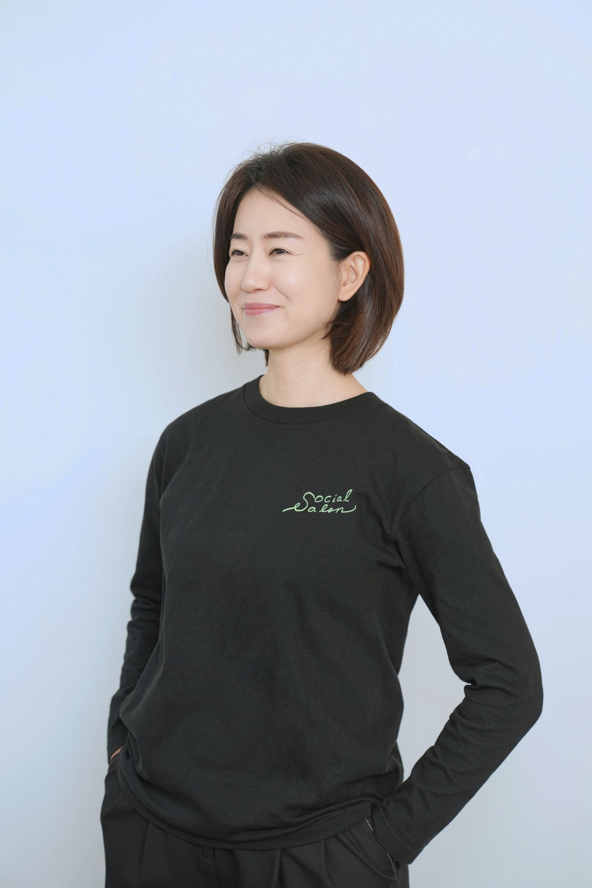
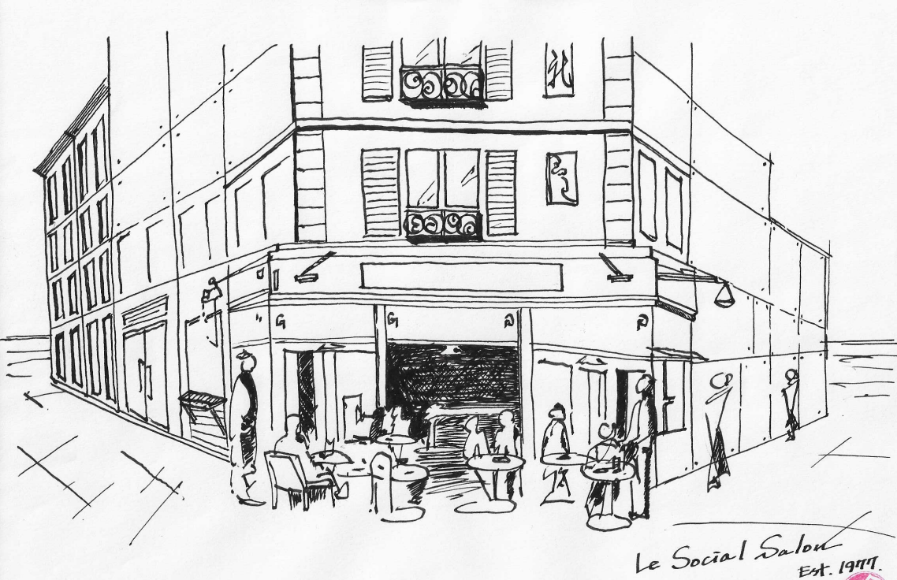
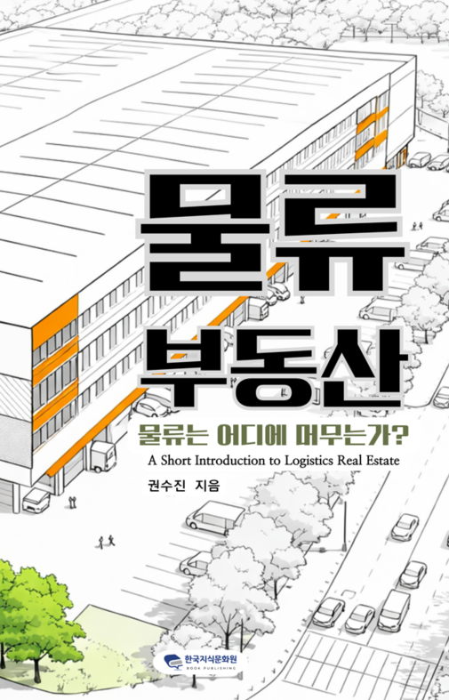

지속가능한 액티브 에이징,
그 공간은 도시공원이어야 합니다.
Sustainable active aging — and that space should be an urban park.
저는 AAIC에서 우리가 직접 만들고 우리가 운영하는 커뮤니티 공간을 연구합니다.
19세기 말 빈(Wien)의 살롱처럼, 사람과 자본과 생각이 자연스럽게 머무르며 가치를 만들어내는 — 오래 머물고 싶은 도시의 녹색 공간을 꿈꿉니다.

